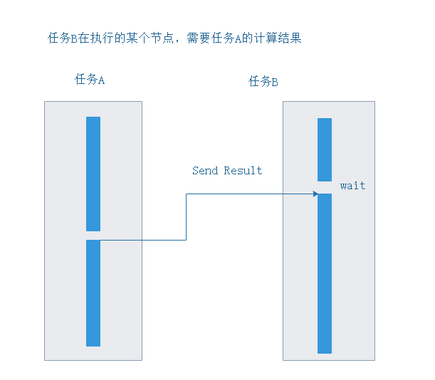

// 初始化工作
// 1. 通过init 方法,仅执行一次，但是不能重复调用
// 模拟全局配置
type AppConfig struct {
Name string
IP string
Version string
}
var appconfig *AppConfig
func init() {
appconfig=new(AppConfig)
appconfig.Name = "myapp"
appconfig.IP = "192.168.66.88"
appconfig.Version="v1.0"
}
// 2. 使用sync.once方法，保证我们代码执行一次
// 销毁全局资源
var once sync.Once
func DelAPP() {
once.Do(func(){
appconfig = nil
log.Println("delete app!")
})
}假如任务耗时比较长可以考虑把方法编写成异步的（类似前端知识中的ajax请求），例如任务中有需要下载的任务，这时候下载任务可以考虑编写成异步，例如数据存储任务等
编写异步任务方法要点: 任务内部启动goroutine处理任务，并立即返回>
// 编写一个数据库异步处理任务(模拟)
func StorageData(data string){
// 预处理数据
log.Println("入库前预处理: ",data)
go func(data){
time.Sleep(time.Sencond*3)
log.Println("数据库存储完成")
}
}
异步方法的基础上，如果想处理异步的结果，需要传递一个回调方法
注意： 编写异步的基础上,加上回调方法（处理结果）
// 编写一个异步爬取web的方法
package main
import (
"io/ioutil"
"log"
"net/http"
"os"
"time"
)
func CrawlUrl(url string,fn func(response *http.Response)) {
go func() {
response,err:=http.Get(url)
if err!=nil{
log.Println(err)
return
}
fn(response)
}()
}
func main() {
CrawlUrl("http://www.baidu.com", func(response *http.Response) {
data,err:=ioutil.ReadAll(response.Body)
if err!=nil{
return
}
log.Println("Content length: ",len(data))
})
log.Println("main func do other thing")
CrawlUrl("http://i2.hdslb.com/bfs/archive/bc8adff1dafe7494c6b2155ec82725af0034c31b.png", func(response *http.Response) {
data,err:=ioutil.ReadAll(response.Body)
if err!=nil{
log.Println(err)
return
}
f,_:=os.Create("1.png")
defer f.Close()
_, _ = f.Write(data)
})
time.Sleep(time.Second*5)
}
不需要结果
需要结果的
// 1. 需要返回结果，仅需要完成任务即可
func CallTaskNoRsult(){
wg := sync.WaitGroup{}
wg.Add(5)
for i:=0;i<5;i++{
go func(num int) {
defer wg.Done()
log.Println("任务",num,"完成")
}(i)
}
wg.Wait()
}
// 2. 需要完成任务还需要返回结果，可能需要做后续处理
func CallTaskResults() {
// 创建一个channel 用于接收任务处理结果
results:=make(chan string,10)
defer close(results)
// 随机种子
rand.Seed(time.Now().UnixNano())
for i:=0;i<10;i++{
go func(num int) {
// 随机生成一个结果,并把结果添加到结果队列
results<-fmt.Sprintf("Task %d# result: %d",num,rand.Intn(20)+10)
}(i)
}
//等待输出结果
for i:=0;i<10;i++{
log.Println(<-results)
}
}
// 模拟多源下载，任意一个任务完成就结束
func Download(){
// 定义一个channel,用于接收结果
result:=make(chan string)
defer close(result)
// 种子
rand.Seed(time.Now().UnixNano())
// 异步获取子任务下载 数据
for i:=0;i<10;i++{
go func(num int) {
// 随机休眠一段时间
time.Sleep(time.Second*time.Duration(rand.Intn(5)+1))
result<-fmt.Sprintf("Task %d# download ok!",num)
}(i)
}
// 等待子任务完成
log.Println(<-result)
}
稍微复杂的一些业务，其中的一个子任务需要另一个子任务的结果

// 异步协作，任务B需要任务的计算结果
func BWaitA() {
// 创建channel 用于任务通讯
ch:=make(chan string,1) // 缓存为1
defer close(ch)
// 创建wait group
wg:= sync.WaitGroup{}
wg.Add(2)
// 启动任务A
go func() {
defer wg.Done()
log.Println("A do working...")
time.Sleep(time.Second*3)
log.Println("A end calc....， send result to B")
ch<-"data for B"
log.Println("A do send result to B, do other thing!")
}()
// 启动任务B
go func() {
defer wg.Done()
log.Println("B do working...")
time.Sleep(time.Second*2)
log.Println("B wait A...")
log.Println(<-ch)
log.Println("B user A result do other thing!")
}()
wg.Wait()
}某些特殊的情景下，我们可能需要取消子任务的执行，例如主任务因为用户的原因，需要提前结束,通知所有的子任务结束
func CancleTask() {
// 创建一个cancele 的channel 用于通知子任务结束
canncle:=make(chan struct{})
// 封装一个方法用于检查 任务是否被取消了
iscancle:= func() bool {
select {
case <-canncle:
return true
default:
return false
}
}
//模拟启动子任务
for i:=0;i<5;i++{
go func(num int) {
for{
// 监听任务是否被取消
if iscancle(){
// 如果被取消则 退出任务
log.Printf("Task #%d is canceled!\n",num)
return
}
log.Printf("Task #%d is working...\n",num)
time.Sleep(time.Millisecond *50)
}
}(i)
}
// 模拟任务运行一段时间
log.Println("main working for an while...")
time.Sleep(time.Millisecond *100)
// 取消任务,利用关闭channel的广播特性
close(canncle)
time.Sleep(time.Second)
}
当任务比较复杂的时候，更多情况可能是关联任务，例如下图这样的多层任务
根context节点，context.BackGroud() 创建一个空的context（根节点），没有任何作用，为了给子contentx继承的
ctx，canncel:=context.WithCancel(ctx)，返回一个ctx子节点，返回一个cancleFuc
调用取消方法，给所有的子节点发送取消信号
子任务中监听取消信号并退出任务
func CancelWithCtx() {
// 创建空ctx，根节点
root:=context.Background()
// 定义isCancel方法
isCanncel:= func(ctx context.Context) bool {
select {
case <-ctx.Done():
return true
default:
return false
}
}
Task:=func (ctx context.Context, num int){
// 启动子任务
go func() {
for{
if isCanncel(ctx){
// 如果被取消则 退出任务
log.Printf("Task #%d sub is canceled!\n",num)
return
}
}
}()
for{
if isCanncel(ctx){
// 如果被取消则 退出任务
log.Printf("Task #%d is canceled!\n",num)
return
}
log.Printf("Task #%d is working...\n",num)
time.Sleep(time.Millisecond*200)
}
}
// 创建子ctx，用于取消
ctxOne,cancelOne:=context.WithCancel(root)
go Task(ctxOne,1)
// 创建子ctx，用于取消
ctxTwo,_:=context.WithCancel(root)
go Task(ctxTwo,2)
// 模拟保证所有的goroutine都运行起来
time.Sleep(time.Second)
// 取消 第一个任务
cancelOne()
time.Sleep(time.Second)
}
output:
2019/06/27 11:55:45 Task #1 is working...
2019/06/27 11:55:45 Task #2 is working...
2019/06/27 11:55:46 Task #1 is working...
2019/06/27 11:55:46 Task #2 is working...
2019/06/27 11:55:46 Task #1 is working...
2019/06/27 11:55:46 Task #2 is working...
2019/06/27 11:55:46 Task #1 is working...
2019/06/27 11:55:46 Task #2 is working...
2019/06/27 11:55:46 Task #1 is working...
2019/06/27 11:55:46 Task #2 is working...
2019/06/27 11:55:46 Task #1 sub is canceled!
2019/06/27 11:55:46 Task #1 is canceled!
2019/06/27 11:55:46 Task #2 is working...
2019/06/27 11:55:47 Task #2 is working...
2019/06/27 11:55:47 Task #2 is working...
2019/06/27 11:55:47 Task #2 is working...
2019/06/27 11:55:47 Task #2 is working...
package main
import (
"fmt"
"net/http"
"time"
)
func CtxTest(w http.ResponseWriter, r *http.Request){
// 获取 ctx
ctx := r.Context()
fmt.Println("processing request")
select {
case <-time.After(5 * time.Second):
// 模拟请求处理完
w.Write([]byte("request processed"))
case <-ctx.Done(): // 网页加载完毕 Done 信号发出
// 用户取消的时候，获取取消信号s
fmt.Println( "request cancelled")
}
}
func main() {
// 绑定路由处理方法
http.HandleFunc("/",CtxTest)
// 启动服务
http.ListenAndServe(":8000", nil)
}